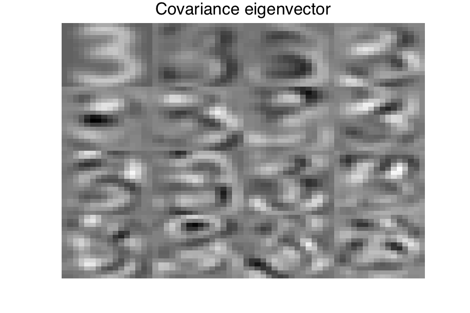
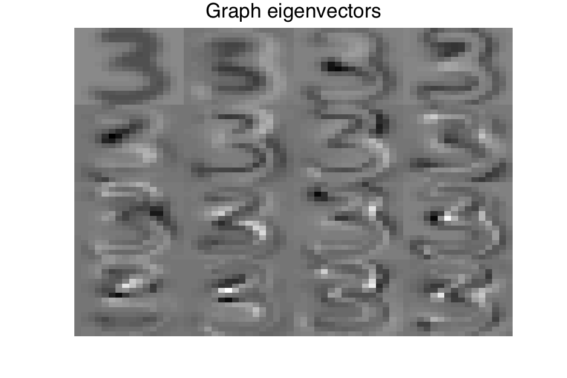
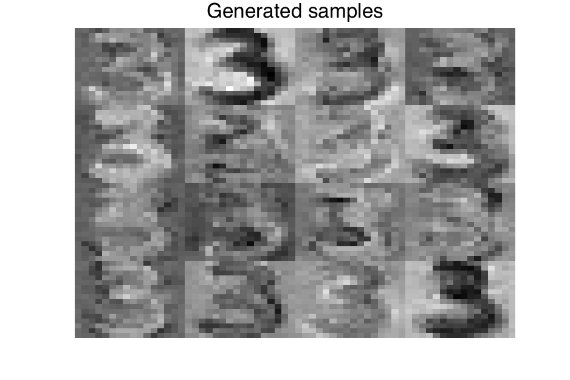
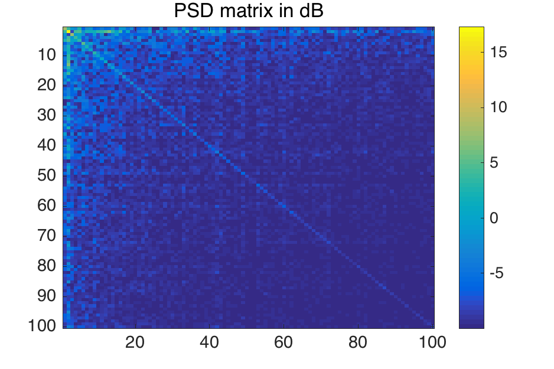

 
<!DOCTYPE html>
<html lang="en">
<head class="include" file="../include/header.html">
<link rel="stylesheet" href="../include/bootstrap.min.css">
<link rel="stylesheet" href="../include/bootstrap-theme.min.css">
<link rel="stylesheet" href="../include/bootstrap-select.min.css">
<link rel="stylesheet" href="../include/style.css" type="text/css">
<link rel="stylesheet" href="../include/highlight.css" type="text/css">
<meta charset="utf-8">
<meta http-equiv="X-UA-Compatible" content="IE=edge">
<meta name="viewport" content="width=device-width, initial-scale=1">
<meta NAME="keywords" CONTENT="reproducible, research, platform, rrp, rr, reproducible research, reproducible research platform, matlab, code, mat2doc, science, knowledge"/>

<title>DEMO_GENERATE_SAMPLES - Generation of digit</title>
</head>


<!-- body must stay hidden until all include parts are loaded -->
<body style="display:none;">
<!-- Wrap the content into responsive container -->
<div class="container">
<!-- Include main navigation -->
    <div class="masthead include" file="../include/mainnav.html"></div>
        <div class="row">
            <div class="col-md-2" id="codeswitch"><div id="menutitle"><a href="demo_generate_samples_code.html">View the code</a></div>
</div>
            <div class="btn btn-large btn-success span22-doc">
                <a style="color: #FFFFFF" href="../archive/#PACKAGE#.zip">Download <font color="red">r<sup>2</sup>&pi;</font> archive for windows</a>
                <a style="color: #FFFFFF" href="../archive/#PACKAGE#.tgz"> or for unix </a> 
            </div>
        </div>
        <div class="row">
            <div class="col-md-2">
                <div class="include" file='contentsmenu.html'></div>
                <br/>
                <div id="seealso"><p></p></div>
                <br/>
            </div>
            <div class="col-md-10">
           
                    <h1 class="title">DEMO_GENERATE_SAMPLES - Generation of digit</h1>

<div class="section" id="xxxdescription">
<h2>Description</h2>
<p>Authors: Nathanael Perraudin and Pierre Vandergheynst</p>
<p>Date: January 2016</p>
<p>Paper: Stationary signal processing on graphs</p>
</div>
<div class="section" id="abstract-of-the-paper">
<h2>Abstract of the paper</h2>
<p>Graphs are a central tool in machine learning and information
processing as they allow to conveniently capture the structure of
complex datasets. In this context, it is of high importance to develop
flexible models of signals defined over graphs or networks. In this
paper, we generalize the traditional concept of wide sense stationarity
to signals defined over the vertices of arbitrary weighted undirected
graphs. We show that stationarity is intimately linked to statistical
invariance under a localization operator reminiscent of translation. We
prove that stationary signals are characterized by a well-defined Power
Spectral Density that can be efficiently estimated even for large
graphs. We leverage this new concept to derive Wiener-type estimation
procedures of noisy and partially observed signals and illustrate the
performance of this new model for denoising and regression.</p>
</div>
<div class="section" id="this-experiment">
<h2>This experiment</h2>
<p>Let us focus on the digit <span class="math">\(3\)</span>. For this experiment, we build a <span class="math">\(20\)</span>
nearest neighbors graph with only <span class="math">\(50\)</span> samples. Figure 1 and 2
shows the eigenvectors of the Laplacian and of the covariance matrix.
Because of stationarity, they are very similar. Moreover, they have
<span class="math">\(3\)</span>-like shape. Using the graph and the PSD, it is also possible
generate samples by filtering Gaussian random noise with the following
PSD based kernel: <span class="math">\(g(\lambda_\ell) = \sqrt{\Gamma_{\ell,\ell}}\)</span>. The
resulting digits have <span class="math">\(3\)</span>-like shape confirming the that the class is
stationary on the nearest neighbors graph.</p>
<div class="figure align-center">

<p class="caption">Laplacian eigenvectors associated to the <span class="math">\(16\)</span> smallest non-zero eigenvalues</p>
</div>
<div class="figure align-center">

<p class="caption">Covariance eigenvectors associated with the <span class="math">\(16\)</span> highest eigenvalues</p>
</div>
<div class="figure align-center">

<p class="caption">Generated samples by filtering Gaussian random noise on the graph.</p>
</div>
<div class="figure align-center">

<p class="caption">PSD of the data (Note the diagonal shape of the matrix)</p>
</div>
<p><em>This code produces the following output</em>:</p>
<pre class="literal-block">
GSPBox version 0.5.0. Copyright 2013-2015 LTS2-EPFL,by Nathanael Perraudin, Johan Paratte and David Shuman
[Warning: MATLAB cannot use OpenGL for printing when started with the '-nodisplay' option.]
[&gt; In inputcheck (line 143)
  In print (line 153)
  In gsp_plotfig (line 86)
  In plotexec (line 148)]
[Warning: MATLAB cannot use OpenGL for printing when started with the '-nodisplay' option.]
[&gt; In inputcheck (line 143)
  In print (line 153)
  In gsp_plotfig (line 86)
  In plotexec (line 153)]
[Warning: MATLAB cannot use OpenGL for printing when started with the '-nodisplay' option.]
[&gt; In inputcheck (line 143)
  In print (line 153)
  In gsp_plotfig (line 86)
  In plotexec (line 158)]
[Warning: MATLAB cannot use OpenGL for printing when started with the '-nodisplay' option.]
[&gt; In inputcheck (line 143)
  In print (line 153)
  In gsp_plotfig (line 86)
  In plotexec (line 164)]
The stationarity level of the data is: 0.961220
</pre>
</div>
<H2>References:</H2>


<p><a name="perraudin2016stationary"></a>

N.&nbsp;Perraudin and P.&nbsp;Vandergheynst.
 Stationary signal processing on graphs.
 In <em>Infoscience - EPFL</em>, 2016.

</p>


            </div>
        </div>

        <div class="include" file="../include/footer.html"></div>
    </div>
</div>
<!-- These two have to be here to dynamically load the included parts -->
<script src="../include/jquery.min.js"></script>
<script src="../include/bootstrap-select.min.js"></script>
<script src="../include/rrp.js" type="text/javascript"></script>
</body>
</html>


